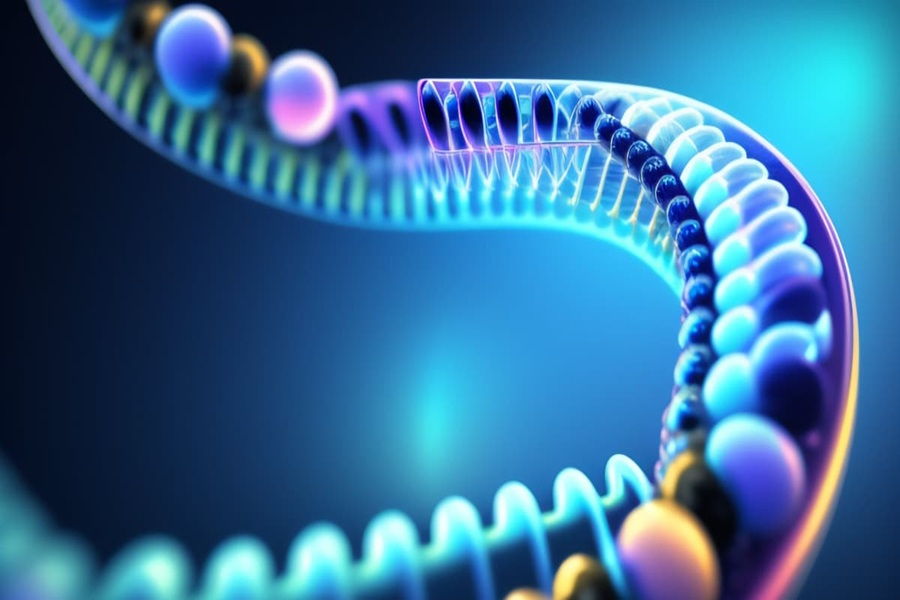

Descoberta Científica Revoluciona Tratamento de Doenças Raras
Pesquisadores brasileiros desenvolvem terapia genética inovadora que pode beneficiar milhões de pessoas ao redor do mundo.
Uma equipe de cientistas da Universidade Federal de São Paulo (Unifesp) anunciou nesta segunda-feira (19) uma descoberta promissora no campo da medicina genética. A pesquisa, que vinha sendo conduzida há mais de cinco anos, resultou em uma terapia inédita capaz de corrigir mutações causadoras de doenças raras de origem hereditária.
A inovação utiliza tecnologia de edição genética por CRISPR-Cas9, permitindo a correção precisa de genes defeituosos em células humanas. O tratamento já foi testado com sucesso em modelos animais e agora segue para testes clínicos em humanos, após aprovação da Anvisa e com apoio do Ministério da Saúde.
“Estamos diante de um marco para a medicina brasileira e mundial. Essa terapia representa esperança para milhares de famílias que lutam contra doenças sem tratamento eficaz até hoje”, destacou a coordenadora do estudo, Dra. Helena Moreira.
Estima-se que mais de 13 milhões de brasileiros convivam com alguma condição rara, muitas vezes sem diagnóstico ou assistência adequada. A nova abordagem poderá ser aplicada, inicialmente, a três dessas enfermidades, incluindo a distrofia muscular de Duchenne e a síndrome de Rett.
Organizações internacionais de saúde aplaudiram a iniciativa e destacaram o potencial de exportação da tecnologia. O Brasil pode se tornar uma referência global em terapias genéticas nos próximos anos.
Além do impacto médico, a descoberta reacende o debate sobre financiamento à pesquisa científica no país. O projeto só avançou graças a parcerias entre universidades, setor privado e agências internacionais.
“Esse é um exemplo claro do que a ciência nacional é capaz de fazer quando há investimento e apoio. O futuro da saúde passa por laboratórios como este”, afirmou o ministro da Ciência e Tecnologia, Eduardo Lima.
← Voltar para notícias